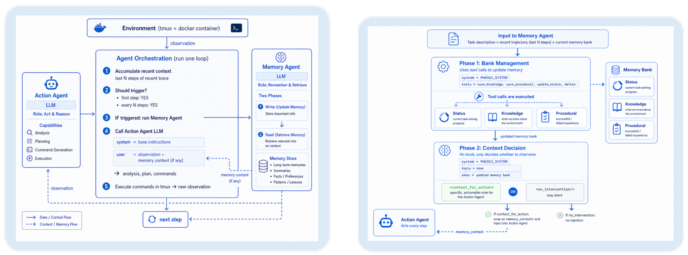
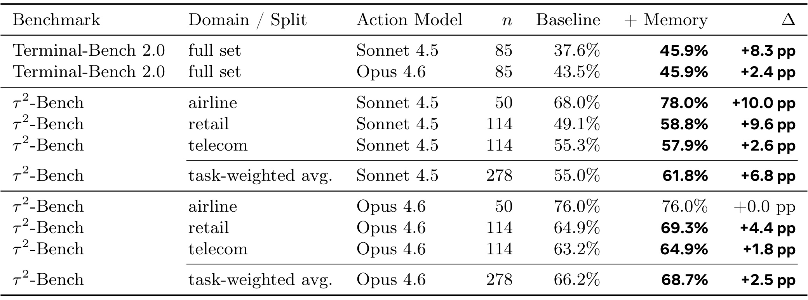
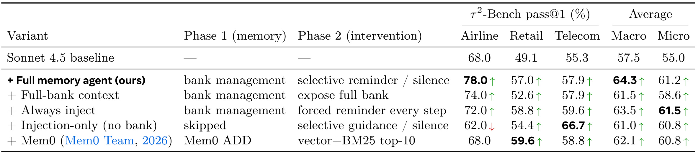
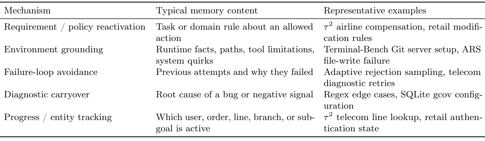
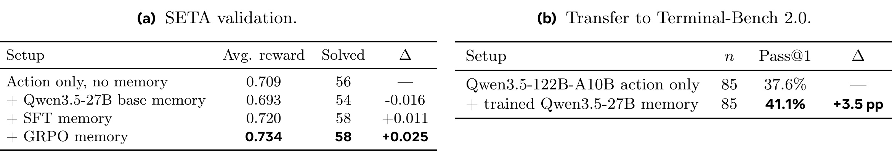

Remember When It Matters：长程 Agent 的主动记忆干预
这篇论文研究长程 Agent 为什么会“明明见过、后来却不再照做”，并把记忆从被动存储与检索改写为一个可选择沉默的干预策略。论文作者为 Yifan Wu、Lizhu Zhang、Yuhang Zhou、Mingyi Wang、Bo Peng、Serena Li、Xiangjun Fan、Zhuokai Zhao，机构为 Meta AI。论文入口为 arXiv:2607.08716，官方实现位于 proactive-memory-agent，本轮已核验仓库可访问。方法的关键不是替换原 action agent，而是在旁路运行独立 memory agent：它维护结构化执行状态，并在每次调用时判断应给下一步行动一条有依据的提醒，还是保持静默。
在长程任务中，真正会衰减的不是信息是否被存下，而是任务约束、环境事实、失败诊断与未完成子目标能否在关键时刻继续约束下一步行动。只做被动存储或检索，无法回答何时应让记忆进入控制环；提醒太少会重复犯错，提醒太多又会增加时延与干扰。
1. 背景和问题
长程 Agent 的难点并不只是单步推理更复杂，而是一次任务会积累很长的观测、动作和局部决策链。终端 Agent 可能先读到隐藏测试要求，随后陷入另一个错误的调试；对话工具 Agent 可能先核验用户身份或政策条款，许多轮之后才真正执行改签、退款或补偿。此时，一条早期信息可能仍在完整 transcript 里，甚至没有超出模型上下文窗口，却已经不再影响下一步动作。论文把这种现象称为 behavioral state decay（行为状态衰减）：执行状态没有物理丢失，却失去了对行为的因果约束。典型表现包括重新尝试已失败的命令、忘掉已确认的文件路径、修复一个局部错误时破坏原始要求、把已诊断的错误当成新问题，以及搁置未完成的子目标。
这个定义把“记得”拆成了两个不同问题。第一个是可用性：信息是否被保存在上下文、向量库、摘要或外部记忆里，之后能否被找回。第二个是控制性：在行动即将发生的具体时刻，哪一条状态值得重新进入模型上下文，并且提醒是否足以改变下一步选择。传统 RAG、长期记忆库、MemGPT 或 MemoryBank 更擅长第一个问题；总结器会压缩“发生过什么”；检索器按相似度找“哪些记录相关”。但一个相似度很高的记录不一定此刻需要打断 action agent，而一个字符相似度低、却代表硬约束的失败诊断可能恰恰应该立即出现。论文因此把记忆问题从“写什么、取什么”推进到“何时让哪段执行状态重新获得控制权”。
两种极端策略都不理想。完全被动地把整个 memory bank 永久塞给 action agent，虽然提高了信息可见性，却会让当前观察、历史事实、失败记录和旧子目标争夺注意力；bank 越长，真正关键的约束越可能再次被稀释。另一方面，每个 step 都强制生成提醒，会增加一次额外模型调用的延迟和 token 成本，还可能重复当前观察里已经清楚的信息，甚至把 memory agent 的推测误包装成约束，使执行者进行无必要的复核。于是“不提醒”不能只是系统没有找到内容后的默认结果，而应成为策略可主动选择的动作。论文最有价值的概念转变正是在这里：沉默和提醒共同构成控制策略，记忆质量不仅取决于召回率，还取决于干预校准。
现有 reflection、critic 和 advisor 路线也能给执行者反馈，但它们通常允许辅助模型提出广泛策略、重新规划或进行一般性推理。Proactive Memory Agent 刻意缩小职责：提醒必须来自已经维护的执行状态，例如任务硬要求、工具核验事实、失败尝试、根因诊断或未完成子目标，而不是让第二个大模型接管行动规划。这种约束一方面增强可追溯性，另一方面也使消融更清楚：如果只有 advisor 式建议但没有持久 bank，效果是否稳定；如果有 bank 却没有选择性干预，信息可见性是否足够；如果把一般检索层换进来，是否能复现同样的跨域收益。
论文选择 Terminal-Bench 2.0 与 τ²-Bench，是因为两者代表两种不同的状态衰减。前者要求 Agent 在容器中读文件、运行命令、修改代码和通过隐藏 verifier，最重要的是环境落地、调试连续性和避免失败循环；后者要求 Agent 在 airline、retail、telecom 三个真实服务域与用户和工具交互，最重要的是政策条款、身份状态、实体进度和操作顺序。若同一记忆控制环能同时改善这两类任务，说明它维护的不是某个 benchmark 的专用摘要，而是更一般的执行状态。对大模型 Agent 系统而言，这个问题也非常实际：上下文窗口继续增长并不会自动保证模型持续服从早期约束，系统仍需要一个显式机制把“过去的重要信息”转化为“现在应当影响动作的信息”。
从系统诊断角度看，behavioral state decay 也比“上下文太短”更可操作。若一条政策已在当前窗口内、模型却仍做出冲突动作，继续扩窗通常不会修复问题；需要检查的是这条政策是否被标记为稳定约束、是否在危险动作前重新激活、提醒措辞是否让模型理解其优先级。若一条失败记录已经被检索到但 Agent 仍重复同一命令，则故障不在召回，而在提醒时机、证据强度或 action agent 对附加上下文的服从。反过来，若 memory agent 在没有新风险时频繁插话，系统应优化静默校准而不是继续提高召回率。这个拆分让日志可以按“写入失败、状态陈旧、未触发、误触发、提醒未被采纳”定位根因，也为论文后面的两阶段消融建立了明确评价对象。
2. 方法
2.1 从行为状态衰减到干预策略
论文先把 action agent 的交互写成轨迹。这个形式化刻意不预设某一种工具框架：只要系统在每一步接收环境观测、输出行动并把结果加入历史，就可以用同一对象描述。执行状态可能散落在任意早期位置，而 memory agent 的任务是维护其中仍会约束后续行为的部分：
符号解释：\(o_t\) 是第 \(t\) 步环境观测，\(a_t\) 是 action agent 输出的动作，\(T\) 是轨迹终点，\(\tau\) 则包含任务执行中已经发生的观测与动作。这个定义同时容纳终端命令、工具调用和对话回复，不把“记忆”局限为文本知识；失败返回、工具核验和中间修复都属于可能影响未来决策的轨迹证据。action policy 的基本采样过程为：
符号解释：\(x\) 是任务描述，\(\tau_{<t}\) 是当前步之前的轨迹，\(\pi_A\) 是由 LLM、工具定义和 agent scaffold 共同实现的行动策略。论文没有修改 \(\pi_A\) 的参数、基础指令、工具或解码流程；主动记忆只改变下一次 action call 是否额外看到一段瞬时 memory context。因此它是可插拔的旁路控制器，而不是对执行者进行联合训练后才成立的新 Agent。
memory agent 不必重读完整轨迹，而是观察局部窗口：
符号解释：\(W_k\) 是窗口算子，\(w_t\) 包含最近 \(k\) 条消息和当前观测。主实验中 \(k=8\)。窗口负责提供“最近发生了什么”，持久 bank 则负责保存“更早但仍应约束行为的执行状态”。memory agent 在第一次行动时被触发，之后按固定间隔运行；每次运行先编辑 bank，再从更新后的 bank 中决定是否干预。这一分工避免了仅靠滑动窗口承载全部历史，也避免让 bank 无差别占据 action agent 的上下文。

Figure 1 的左半部分展示外部控制环：action agent 仍按原有方式接收观测、分析、规划和执行命令；编排器积累最近 \(N\) 步轨迹，触发独立 memory agent，随后才调用下一次 action LLM。虚线表示 memory context 只在需要时回注，而不是永久拼接。右半部分把一次 memory step 拆成两个阶段：Phase 1 允许调用保存知识、保存过程、更新状态和删除条目的工具，形成更新后的 bank；Phase 2 不再拥有工具，只能在 <context_for_action> 与 <no_intervention/> 之间选择。图中最重要的信号顺序是 先整理执行状态，再判断当前是否需要激活它。这使“bank 被更新”与“action agent 被打断”不再绑定：系统可以记录新事实但保持静默，也可以在旧事实即将被违反时给出精确提醒。
2.2 结构化执行状态记忆库
bank 不是一段不断增长的自由文本，而由三类状态组成：
符号解释：\(B_t\) 是第 \(t\) 次 memory step 后的 bank；\(s_t\) 是 memory agent 私有的状态字段，记录进度、开放问题和未解决风险；\(K_t\) 是 knowledge memories 集合，保存任务要求、环境属性、文件路径、配置、API 细节、用户或工具核验事实等相对稳定的信息；\(P_t\) 是 procedural memories 集合，保存尝试及结果，例如失败命令、有效修复、被排除的假设、错误模式、诊断信号和性能变化。\(s_t\) 永不直接展示给 action agent，因此 memory agent 可以维护自己的工作模型，又不把进度草稿污染执行者上下文。
\(K_t\) 与 \(P_t\) 的区分对应“世界是什么”和“我们试过什么”。假设终端任务发现 Git 服务只能通过特定端口访问，这是稳定环境事实，应进入 \(K_t\)；随后两个写文件方案分别失败及其报错，则属于 \(P_t\)。若把两者都压成普通摘要，后续模型可能无法区分硬约束与暂时经验。每个条目还带有短标识符、自然语言内容、创建时间和访问统计，Phase 1 可以按标识符更新或删除陈旧记录。结构化 bank 的作用不是追求完整复述，而是把会约束未来动作的事实、过程证据和开放风险分开维护。
这种 bank 设计也明确了信息生命周期。当前窗口提供新证据，memory agent 判断它是稳定事实、过程经验还是仅属于短期观察；错误条目能被显式删除，状态字段能随着子目标完成而更新。推理时，action agent 看不到整个私有状态，也不会自动看到 \(K_t\) 和 \(P_t\) 的全部内容。只有 Phase 2 选中的少量信息会成为瞬时提醒。于是 bank 的容量与 action context 的干扰被解耦：系统可以长期维护较丰富的执行状态，同时把每次对行动的影响压缩到一条针对下一步的提示。
2.3 两阶段 bank 编辑与选择性提醒
Phase 1 的状态转移写为：
符号解释：\(\pi_M^{\mathrm{edit}}\) 是 memory agent 的编辑策略，它读取任务 \(x\)、最近窗口 \(w_t\) 和旧 bank \(B_{t-1}\)，输出零个或多个预定义工具调用；系统按顺序执行这些调用后得到 \(B_t\)。可用工具包括 memory_update_status、memory_save_knowledge、memory_save_procedural 和 memory_delete。若策略不返回工具，bank 保持不变。这里的输出不是自由文本总结，而是受限的显式 bank 操作，因而每一条持久状态都有类型和生命周期。
Phase 2 的干预决策为：
符号解释：\(\pi_M^{\mathrm{intervene}}\) 读取更新后的 \(B_t\)，\(i_t\) 要么是空动作 \(\varnothing\)，要么是一段有 bank 依据的 reminder。非空提醒作为单独的瞬时 context 注入下一次 action call；空动作则完全不改变执行者输入。显式的 \(\varnothing\) 是方法成立的核心：策略被鼓励只在某条记忆很可能改变下一步决策时介入，例如即将违反任务要求、当前报错可由已知环境事实解释、准备重试已失败方案、仍有效的根因诊断被忽略，或开放子目标正在丢失。
这也给出清晰的职责边界。memory agent 不应复述当前 observation 已经显眼的信息，不应给宽泛战略建议，也不应接管 action agent 的规划；它只把行为上即将失活的执行状态重新放到决策面前。固定触发函数 \(g(t)\) 在主实现中选择第一步和固定间隔，实验配置进一步设置为每一步运行，从而把“是否调用 memory agent”控制住，把效果归因到干预策略本身。论文同时承认动态触发可以更经济，例如只在工具报错、测试失败、重复命令或上下文突变后调用，但并未在本轮实验中实现或量化。
2.4 开放权重记忆策略的 SFT 与 GRPO
主系统可以直接用提示式 frontier model 担任 memory agent，但这样每个 memory step 都增加昂贵调用，且干预校准依赖提示遵循。论文因此进行一项早期训练实验：冻结 Qwen3.5-122B-A10B action agent，只训练 Qwen3.5-27B memory agent。SFT 从提示式 memory agent 的轨迹蒸馏两个阶段，既监督 bank 工具操作，也监督 reminder 与静默的选择。它主要教会模型接口纪律：压缩写入、更新过时状态、区分知识与过程条目，以及不在无必要时提醒。
随后使用 GRPO 针对下游 verifier reward 校准干预策略。长程任务的最终回报稀疏，而一条轨迹里可能发生许多次 memory call，若把同一个终局奖惩平均归给所有调用，信用分配会非常噪声。作者通过离线 rollout 标注可能影响成功的 pivot turns，把更新集中到这些关键位置。论文没有给出可复用的 GRPO 损失公式，因此这里不能把常见实现的目标函数当成本文事实；能确认的是，优化目标不是提高“使用记忆”的频率，而是让 bank 编辑和提醒/静默选择更有利于最终任务成功。训练与推理的分界也很清楚：训练只更新 memory policy，推理时 action policy 保持冻结，继续通过瞬时 context 接受选择性干预。
3. 实验结果
3.1 基准、配置与指标
Terminal-Bench 2.0 评估 Agent 在真实容器终端中检查文件、执行命令、修改代码、调试并通过隐藏 verifier。官方集合有 89 个任务，论文只统计 baseline 与 memory 两侧都产生有效评测的 85 个配对任务，排除 4 个与 Agent 行为无关的 Docker 失败。每个任务只采样一次，pass@1 是最终 verifier 通过的任务比例。τ²-Bench 则评估多轮对话工具使用，包含 airline 50 个、retail 114 个、telecom 114 个 base split 任务，每种配置共 278 次对话；成功由 benchmark evaluator 判断，既报告各域 pass@1，也报告按任务数加权的总体均值。
这两个 benchmark 的互补性很重要。Terminal-Bench 的状态衰减多发生在局部调试循环中，例如忘掉前一个命令为何失败、丢失文件路径或根因诊断；τ²-Bench 的状态衰减更多发生在规则和交互链中，例如用户自述与工具核验冲突、某类票不可修改、认证或一次性操作必须先完成。主实验比较 Claude Sonnet 4.5 与 Claude Opus 4.6 两档 action agent，memory agent 默认使用 Opus 4.6。baseline 与 memory condition 的 action agent 不变；memory agent 观察任务描述、最近 \(k=8\) 条消息与 bank，按实验设置每步运行并选择提醒或静默。
3.2 主结果：弱模型收益更大，强模型仍有增益

Table 1 显示，在 Terminal-Bench 2.0 上，Sonnet 4.5 从 37.6% 提升到 45.9%，绝对增益 +8.3pp；Opus 4.6 从 43.5% 到 45.9%，仍有 +2.4pp。τ²-Bench 的 task-weighted average 上，Sonnet 从 55.0% 到 61.8%，增益 +6.8pp；Opus 从 66.2% 到 68.7%，增益 +2.5pp。这支持“记忆不是只给弱模型补能力”的说法，但也显示边际收益随执行者变强而下降：两档 action model 加记忆后在 Terminal-Bench 都到 45.9%，可能意味着当前 memory policy、任务噪声或单次采样形成新的上限，而不能简单外推为更强模型必然获得同等幅度。
域级结果进一步说明干预高度依赖任务结构。Sonnet 在 airline 从 68.0% 到 78.0%，在 retail 从 49.1% 到 58.8%，分别约 +10.0pp 与 +9.6pp；telecom 仅 +2.6pp。Opus 在 airline 是 76.0% 到 76.0%，完全没有增益，retail 与 telecom 分别 +4.4pp、+1.8pp。规则条款和实体状态较长距离地约束后续操作时，记忆更容易发挥作用；若基础模型已能稳定维护某域状态，额外提醒的空间就小。表中没有置信区间或重复运行方差，因此这些绝对差值证明的是本次 pass@1 配置下的一致提升，而不是每个域差异都已具备统计显著性。
3.3 两阶段消融：bank 可见不等于记忆会起作用
论文在 τ²-Bench 上固定 Sonnet 4.5 action agent 与 Opus 4.6 memory agent，构造四类关键对照。Full-bank context 保留 Phase 1，但每步直接暴露整个 bank，去掉选择性 intervention；Always inject 保留两阶段生成，却删除静默动作，要求每步都提醒；Injection-only 保留辅助模型的提醒/静默，却没有持久 bank，近似一般 advisor；Mem0 则用 ADD 写入和 vector+BM25 top-10 检索替换主动控制策略。这样可以分别问：收益来自“历史可见”、来自“第二模型建议”、来自“一般检索”，还是来自持久状态与选择性干预的组合。

Table 2 的 macro average 对三域等权，完整方法为 64.3，高于 Full-bank 61.5、Always inject 63.5、Injection-only 61.0 和 Mem0 62.1；这说明它在不同域上最均衡。Full-bank 的 micro 为 58.6，较完整方法 61.2 低 2.6 点，证明仅让历史一直可见并不足够，选择“当前真正相关的状态”能减少 bank 噪声。Injection-only 在 telecom 达到 66.7，甚至高于完整方法 57.9，但在 airline 从 baseline 68.0% 降到 62.0%，暴露了无持久依据的 advisor 指导会跨域失稳。Mem0 的 micro 60.8 说明通用持久记忆确实有效，却在 airline 停留 68.0%，也没有完整方法的宏平均优势。
Always inject 的 micro 61.5 比完整方法 61.2 高 0.3 点，但 macro 63.5 低于 64.3，且 airline 只有 72.0、低于选择性方法的 78.0。作者认为 0.3 点处在预期运行方差内；在缺少误差条的条件下，更稳妥的结论是：静默动作并未在所有聚合口径上严格占优，却提供了更好的域均衡性，并可能减少无效注入成本。这一细节非常关键。论文的消融支持“选择性”是鲁棒组件，但还没有证明它在每个域、每次运行和每种成本约束下都必然超过强制提醒。
3.4 轨迹机制：提醒改变的是哪一步

Table 3 把成功干预归纳为五类。规则重激活让 airline 补偿或 retail 修改遵守早期政策；环境落地保存 Git 服务配置、文件路径与工具限制；失败循环规避记录 adaptive rejection sampling 或 telecom 诊断中已失败的尝试；诊断延续让 regex 边界条件、SQLite gcov 配置等根因继续约束修复；进度/实体跟踪则记住当前用户、订单、线路、代码分支或子目标。这些类别都不是一般“总结历史”，而是在 action agent 即将做状态改变或重试操作前，把一条具体证据重新放回决策上下文。
论文给出的轨迹案例进一步解释因果链。在一个 airline 任务中，用户声称自己是 Gold 会员，但工具返回 Regular；baseline 按用户自述发放补偿，memory-enabled agent 则被提醒应以已核验记录为准。在另一个案例中，早期政策说明 basic-economy 航班不可修改，主动提醒在状态改变前重新激活该条款。Terminal-Bench 中，regex-log 的提醒同时恢复任务边界和诊断，指出正则漏掉单数字 IPv4 八位组；adaptive-rejection-sampler 的记忆则保存反复失败的文件修改，并在后续给出环境特定 workaround。真正有效的提醒具有三个条件：内容具体、来自已验证执行状态、时间紧邻可能出错的动作。
定性分析也记录负面案例：memory agent 会把推测说得过于确定，重复 action agent 已经知道的信息，或提出合理但不必要的担忧，导致额外验证。这些失败更像 calibration error，而非 bank 没有保存内容。也就是说，系统的主要剩余风险不一定是“召回不到”，而是“错误地让一条状态获得控制权”。这与 Table 2 中 airline 对 Injection-only 的负增益相呼应：没有稳定 bank 或缺乏静默校准时，辅助模型可能成为新的偏航源。
3.5 开放权重策略：先学接口，再学何时干预
开放权重实验在 SETA 可执行终端任务上训练 Qwen3.5-27B memory agent，并冻结 Qwen3.5-122B-A10B action agent。SFT 蒸馏提示式 memory trajectories，监督 Phase 1 的 bank 操作与 Phase 2 的提醒/静默；GRPO 使用 verifier reward 继续优化，并把训练重点放到离线 rollout 标记的 pivot turns，以缓解终局稀疏奖励跨多次 memory call 的信用分配困难。Terminal-Bench 2.0 完全留作迁移评测，因此能初步检查学到的是 SETA 专用轨迹模式，还是更一般的干预能力。

Table 4(a) 显示，无 memory 的 SETA 平均 verifier reward 为 0.709、解决 56 题；直接加入未经训练的 Qwen3.5-27B base memory 后，reward 反而降至 0.693、解决 54 题。这是非常有信息量的负结果：第二个模型与额外上下文本身不会自动带来收益，未校准干预会伤害执行。SFT 将 reward 提升到 0.720、解决 58 题，GRPO 进一步到 0.734，解决数仍为 58，说明 RL 的收益更多体现在平均任务回报而不是 solved 数继续增加。Table 4(b) 中，训练后的 memory policy 把冻结 action agent 在 85 个 Terminal-Bench 任务上的 pass@1 从 37.6% 提升到 41.1%，得到 +3.5pp 的跨基准增益。
这组结果支持“干预策略可学习”，但证据仍属早期。表中没有单独拆出 SFT 与 GRPO 在 Terminal-Bench 的迁移，也没有不同 memory model 尺寸、触发间隔和推理成本对照；SETA reward 的提升是否来自更好的 bank 编辑、更多静默，还是更好的提醒措辞，现有数字无法区分。论文也没有报告每次额外调用的 token、延迟或金钱成本。因此开放权重模型降低 frontier call 依赖的方向成立，是否达到实际部署的收益成本拐点仍需后续实验。
4. 总结
4.1 我的判断
这篇论文最扎实的贡献不是又做了一个 Agent memory bank，而是提出 behavioral state decay 并把记忆建模为带空动作的控制策略。它抓住了长上下文系统中的一个常见错觉：信息仍可访问，不代表它还会约束行为。结构化 bank 解决“执行状态如何跨时间保留”，Phase 2 解决“哪条状态何时重新进入决策”，二者分别由 Full-bank、Always inject、Injection-only 和 Mem0 消融检验。Terminal-Bench 与 τ²-Bench 的一致提升、未训练 memory agent 的负结果，以及轨迹级案例共同形成较完整的证据链。
4.2 工程启发与复现建议
对真实 Agent harness，最值得复用的是职责隔离：先保持 action agent 不变，把任务约束、环境事实、失败记录和未完成子目标写入可审计 bank；提醒必须指向具体 bank 条目，并允许显式静默。复现时应记录每次触发的窗口、bank diff、干预文本、最终动作和 verifier 结果，才能判断收益究竟来自状态维护还是第二模型的一般推理。还应把干预率、平均 reminder token、额外延迟和“提醒后动作是否变化”纳入指标；只看 pass@1 会掩盖高成本或高打扰率。动态 trigger 可从工具报错、重复命令、测试失败、实体切换和长时间未推进的子目标开始，而不是一开始就训练复杂门控器。
4.3 局限与后续跟进
论文当前至少有四个边界。第一，主结果是单次 pass@1，缺少重复运行、置信区间和显著性检验，0.3pp 这类差异不能作强结论。第二，主 memory agent 使用 Opus 4.6 且实验中每步调用，未报告 token、延迟和成本，收益成本比不可验证。第三，固定 \(k=8\) 窗口和固定触发没有与动态触发比较，尚不清楚多久检查一次最优。第四，定性分析揭示 memory agent 会过度自信或制造不必要核验，却没有单独的干预准确率、危害率或错误类型量化。第五，开放权重训练只覆盖 SETA 到 Terminal-Bench 的一次迁移，尚不能证明跨对话域、不同 action model 和更长任务的普遍性。
后续最应关注三组实验：其一，在相同 action model 与总 token 预算下比较主动记忆、长上下文、摘要、Mem0 和 advisor，报告均值、方差、成本与延迟；这决定方法是否真正优于“多给上下文”。其二，训练可学习 trigger 与干预 policy 的联合门控，并测量静默率、误干预率和每次提醒的边际收益；这能直接验证控制论主张。其三，做跨 harness、跨模型尺寸与跨任务长度的迁移，特别检查 memory agent 是否把一个执行者的习惯错误迁移到另一个执行者。若这些问题得到回答，主动记忆才可能从有效的旁路增强，发展为可预算、可审计且能稳定部署的长程 Agent 控制层。